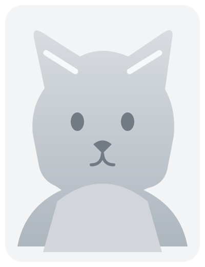

DUSK
CLAW
Soutenir
Mon compte
Cardex
Univers
FAQ
Les règles
↗
Amis

Base
Niveau 1
Niveau 2
Furry 8
Type
Eau
PV
—
VIT
—
ATK
—
POR
—
Coût
—
Rareté
—
Talents
À définir
Réaction
À définir
←
Famille 7
Famille 9
→
Jour
Nuit